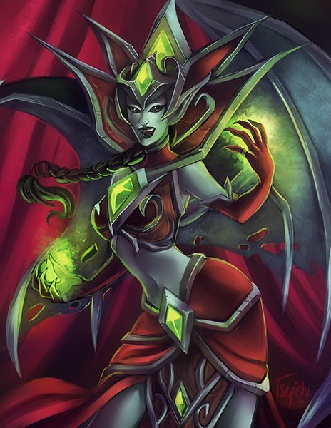

Blood Queen Lanathel
| Blood Queen Lanathel | |
|---|---|
|  | |
| Race | Darkfallen (Undead)" |
| Level | ?? Boss |
| Reaction | Alliance/Horde |
| Loction | Crimson Hall(Icecrown Citidel) |
| Status | Killable |
{kind=link}
Blood Queen Lana'thel " is the "Pinacle Boss" in the Crimson Hall wing of the Icecrown Citadel. The fight is a cross between a very intense DPS race and a hellish battle for survival.
-
1.
Abilities
- 1.1 Ground Phase
- 1.2 Air Phase
- 2. Preparation
-
3.
Strategy
- 3.1 Vampire Debuff
- 3.2 Tips
- 3.3 Heroic Mode
Abilities
Ground Phase
- Blood Mirror - 100% of damage done to you is dealt to the linked source. This affects the person closest to the tank.
- Delirious Slash - Inflicts 50% of weapon damage to an enemy and causes it to bleed for 4500 to 5500 damage per application every 3 sec. for 15 sec. Instant. 75% of weapon damage+6125-7825/3 on Heroic
-
Vampiric Bite - Deals 12025 to 13975 damage to the target, granting them the
Essence of the Vampyr Queen. 13875 to 16125 on Heroic. Triggers...
-
Essence of the Blood Queen - You are infused with the blood of the Vampyr Queen. Damage done increased by 100%. Attacks heal caster.
75 second duration. Healed for 10% of all damage inflicted. Attacks cause no threat. As it wears off, triggers...
-
Frenzied Bloodthirst -The caster must satiate their need for blood, otherwise they will lose their will to Queen Lana'thel.
15 second duration. "Vampiric Bite" replaces the caster's action bars. If not sated after 15 seconds...
- Uncontrollable Frenzy -Charmed. Increases damage done by 100%. Health increased by 5000%. Increases healing done by 1000%.
-
Frenzied Bloodthirst -The caster must satiate their need for blood, otherwise they will lose their will to Queen Lana'thel.
15 second duration. "Vampiric Bite" replaces the caster's action bars. If not sated after 15 seconds...
-
Essence of the Blood Queen - You are infused with the blood of the Vampyr Queen. Damage done increased by 100%. Attacks heal caster.
75 second duration. Healed for 10% of all damage inflicted. Attacks cause no threat. As it wears off, triggers...
- Pact of the Darkfallen - Deals Shadow damage to you and nearby non-linked allies. This effect expires when all linked targets are within 5 yards of each other. Deals 5,000 Shadow damage every 2 seconds.
- Shroud of Sorrow - An aura of sorrow and despair emanates from the caster, inflicting 4500 Shadow damage every 3 sec. to nearby enemies.
- Swarming Shadows - A swarming void consumes the target, causing a mass of shadows to appear beneath the target and dealing 2,313 to 2,687 Shadow damage every 2 seconds. This creates a cloud of shadows on the ground that deals damage to players who stand in it.
- Twilight Bloodbolt - Hurls a bolt of dark blood at the target, dealing 9,250 to 10,750 damage to the target and surrounding allies within 6 yards.
Air Phase
- Incite Terror - Magic dispellable 4-second fear on the entire raid to begin the air phase.
-
Bloodbolt Whirl - Summons a maelstrom of whirling Bloodbolts every 2 seconds for 6 seconds.
- Bloodbolt Whirl - Hurls a bolt of dark blood at the target, dealing 9,250 to 10750 shadow damage to the target and surrounding allies within 50,000 yards.
Preparation
Editor Mode: +
test